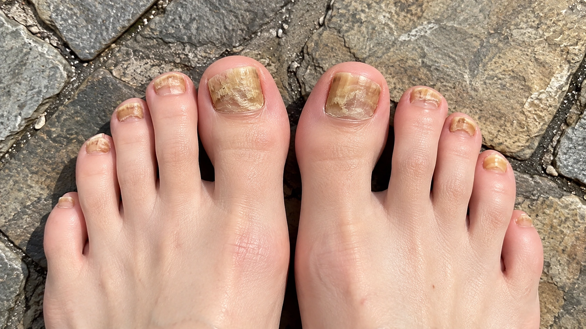
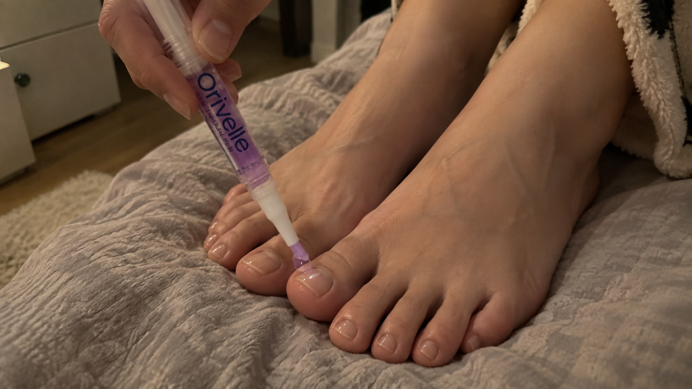
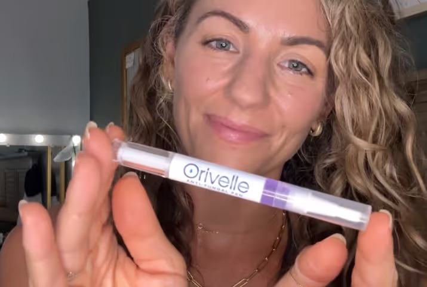
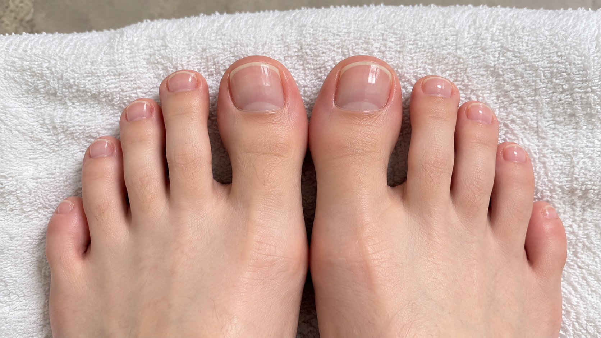
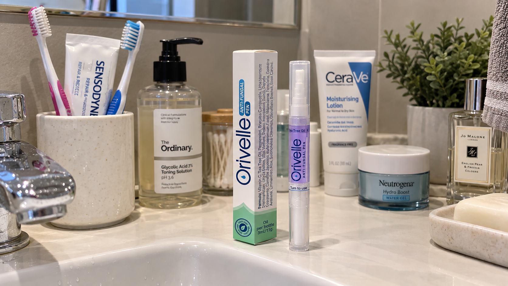

I was about to give up on my toenails altogether when someone who works with feet every day showed me a small nail-care pen that cost less than twenty dollars. I ordered it that night.
But let me back up. For years, one of my big toenails was the thing I noticed every single time I wore sandals. It looked yellowish, rough, and just unhealthy enough that I became self-conscious about it.
At first I assumed it would eventually grow out. It didn't. I tried drugstore creams, tea tree oil, foot soaks, and little brush-on bottles that promised an easy routine. Some were messy. Some smelled awful. Most of them ended up half-used in a bathroom drawer.
What bothered me most wasn't pain. It was how much mental space one ugly-looking nail took up. At the pool, I kept my sandals on until the last possible second. If someone suggested a pedicure, I'd find a reason not to go.

I eventually realized that I didn't need another complicated routine. I needed something simple enough that I would actually use it consistently.
The conversation that changed what I was doing.
I was getting my feet done when I noticed how clean and healthy the woman's toenails looked. Not polished. Not covered up. Just naturally well cared for.
So I asked what she used.
She laughed and told me she didn't do elaborate foot soaks every night and she wasn't covering her toes in thick creams. She used a small nail-care pen because the brush made it easy to apply exactly where she wanted it.
“The best routine is the one you'll actually keep doing.”
That sentence stuck with me because it described my problem perfectly. I'd tried plenty of products. I just hated using most of them.
A small nail-care pen.
The product was called Orivelle. You twist the bottom, brush a small amount onto the nail and around the edges, and let it absorb. No bowl of water. No greasy socks. No 20-minute ritual.
When I looked it up, what caught my attention wasn't some over-the-top promise. It was how easy it looked to add to a normal routine.
That mattered to me more than I expected.
After everything I'd tried, I had finally realized this: a nail-care routine is only useful if you can stick with it.
I ordered one from their website.
Why the format made sense to me.
Most products I'd used before were either messy or inconvenient. With the pen, I could apply a small amount directly to the nail without getting product all over my foot.
It took about a minute. That was the real difference.
I could keep it beside my toothbrush, use it after washing and drying my feet, and move on with my day.

The first few weeks.
When the package arrived, I almost laughed at how simple it was. It was just a small pen with a precision brush.
I cleaned and dried my nail, twisted the pen, brushed the formula across the nail and around the edges, and let it absorb.

The first thing I noticed was how easy it was to keep using.
No greasy residue. No soaking. No complicated instructions I was going to abandon after four days.
Over time, I started paying more attention to the newer-looking nail near the base. It seemed cleaner and healthier-looking than what I'd gotten used to seeing.
It wasn't an overnight transformation. Toenails grow slowly. But because the routine took almost no effort, I actually kept going instead of quitting.
A few months later.
The funny part was that I gradually stopped thinking about my toes so much.
One morning I put on sandals and realized I hadn't done the usual mental check first. I wasn't trying to angle my foot away. I just put the shoes on.
That probably sounds like a small thing. For me, it was the whole point.
It wasn't just the formula. It was the routine.
When I started reading other customer experiences, the comments that stood out were mostly about convenience: the brush format, the quick application, and not having to deal with another messy cream.

Easy enough to keep using
“The pen format is what sold me. I keep it by the sink and use it as part of my normal routine instead of turning nail care into a whole project.”
Much cleaner than creams
“I was tired of greasy products. This is quick, controlled and much easier to apply only where I want it.”
Fits into my routine
“I like that it takes about a minute. That is probably why I've been more consistent with this than the other things I tried.”
Would I recommend it?
If you're expecting an overnight miracle, that's not why I'm recommending it. Toenails grow slowly, and everyone's situation is different.
But if you've been cycling through messy creams, oils and routines you never stick with, Orivelle is worth looking at simply because the format makes daily nail care much easier.

For me, the biggest surprise wasn't some dramatic overnight change. It was finding something simple enough that I didn't quit.
That's why I kept using it.

If you've been putting nail care off because every routine feels like too much work, this is the kind of format I'd look at first.
Want to see today's Orivelle offer?
Check the current price, availability and product details on the official offer page.
Check Pricing & Availability →

Comments
My sister actually sent me this article because she knows how self-conscious I've become about my feet. I've had one toenail that looks rough and yellowish for what feels like forever. I've tried oils and a couple of those thick creams but I never stick with them because they're so messy. The pen applicator is honestly what got my attention. Seems much easier to actually use every day.
Like · Reply · 👍 51 · 2 weeks agoMy wife ordered one of these pens a while back and I honestly thought it was another random thing she'd seen online. Then I started using hers on my big toenail because I've had discoloration there for years. What I like most is that it takes maybe a minute. Twist it, brush it over the nail, done. Way easier than the foot soak I tried last year.
Like · Reply · 👍 23 · 11 days agoI've bought and thrown away more nail products than I can count. Tea tree oil, creams, drops, one of those little bottles with a brush... I always start out determined and then stop using them after a couple weeks. My friend Linda kept telling me to try a nail pen because that's what she uses. Finally ordered one and this is the first routine I've actually managed to stick with. I keep it right next to my toothbrush so I can't forget it.
Like · Reply · 👍 38 · 2 weeks agoSame Patricia. I was SO skeptical because I've tried so many things already. I'm only a few weeks in so I'm not going to pretend my entire toenail suddenly looks different, but the newer-looking nail near the bottom seems cleaner than it did before. I'm taking pictures every couple weeks because otherwise it's impossible to notice gradual changes when you see your feet every day.
Like · Reply · 👍 14 · 12 days ago@Sandra exactly!! Taking photos helps so much. I thought nothing was changing until I compared my first photo with the one I took several weeks later. Toenails grow so slowly that it's hard to judge anything day to day.
Like · Reply · 👍 9 · 12 days agoHas anyone here used it longer than a couple months? That's my only hesitation. I've had one stubborn-looking toenail for probably three years and I've learned not to expect anything overnight. I'm more curious what it looks like after you've been consistent with it for a few months and the nail has had time to grow.
Like · Reply · 👍 5 · 9 days agoAbout two months for me. I still use it regularly because it's basically become part of my routine now. The biggest difference is around the base where the newer nail is coming in. I wouldn't judge something like this after a week because your toenail barely grows in that amount of time. I'm just letting mine grow and trimming the older part as I go.
Like · Reply · 👍 11 · 8 days agoI've been using a nail pen for around 3 months now. Still going. What sold me wasn't really the marketing, it was just how easy the brush is compared with creams. I do both big toes after showering and it probably takes 60 seconds total. That's about as complicated as I'm willing to make a foot-care routine.
Like · Reply · 👍 7 · 8 days agoI'm 63 and honestly I thought ugly-looking toenails were just something I had to live with at this point. Mine started bothering me years ago and eventually I just stopped wearing open-toed shoes. I've been using this consistently and I'm finally feeling a little less self-conscious about my feet. Still giving the nail plenty of time to grow, but I'm encouraged enough to keep going.
Like · Reply · 👍 52 · 1 week ago@Nancy same here. I'm 68 and stopped getting pedicures because I was embarrassed about one of my big toenails. I know the nail isn't going to grow out overnight, so I've just been patient with it. It took several weeks before I thought I could really see anything changing. My daughter noticed it recently without me mentioning it, which made my day because she didn't even know I was using anything.
Like · Reply · 👍 41 · 6 days agoThe pen format threw me off at first. Seemed gimmicky. My wife ordered it after seeing something online and I made fun of her for buying another little beauty gadget. Then I tried it myself and had to admit the applicator is actually pretty clever. No dipping a brush back into a bottle, no cream all over your hands, just twist the bottom and brush it directly where you want it.
Like · Reply · 👍 19 · 10 days agoGoing on vacation in November and I just ordered mine. If I can finally wear sandals without thinking about my big toenail the entire time I'll be thrilled. I've tried one cream before but hated putting socks over it afterward. Everyone here keeps saying the pen is quick to use so fingers crossed. Taking a before picture when it arrives and I'll see how it goes.
Like · Reply · 👍 6 · 5 days agoThis article is clearly an ad. Just want to point that out before anyone orders something based entirely on the story. I've seen enough of these pages online to know there's usually an affiliate link involved somewhere.
Like · Reply · 👍 12 · 4 days ago@Janet I mean yeah, it's obviously promoting something. I assume that about pretty much everything I read online now lol. I can only speak for myself but I ordered the pen anyway and I like how easy it is to use. People should obviously decide for themselves and not expect some overnight miracle.
Like · Reply · 👍 17 · 4 days agoI've tried the tea tree oil route and I just couldn't stand the smell anymore. Then I bought a thick cream and kept forgetting to use it because it was hidden in the bathroom cabinet. This is much easier for me. I leave the pen beside my toothbrush and use it after my shower. I think convenience matters more than people realize because you actually have to keep doing these routines long enough to judge them.
Like · Reply · 👍 34 · 1 week agoAlmost gave up after the first couple weeks honestly because I kept checking my nail every morning expecting to see something obvious. Then I realized how slowly toenails actually grow. Once I stopped obsessing over it and compared pictures a few weeks apart, it made more sense. I'm sticking with it and just watching the newer nail as it comes in.
Like · Reply · 👍 31 · 6 days agoMy daughter got me onto this. She'd been using a nail pen for a while and kept telling me I should try one because she knew how much I hated the creams I'd bought. I finally listened. The brush makes it so much easier to get around the edges of my big toenail without getting product everywhere. Wish more nail products came in this kind of applicator.
Like · Reply · 👍 44 · 5 days agoI went for a pedicure last weekend for the first time in ages. I used to make excuses whenever my friends wanted to go because I was embarrassed about my toenail. It's funny because the nail probably bothered me way more than anyone else ever noticed, but once you become self-conscious about your feet it's hard to stop thinking about them. I'm 57 and I'll happily take feeling comfortable in sandals again haha.
Like · Reply · 👍 29 · 4 days agoI was using another nail oil before this and honestly the biggest difference for me is just the applicator. With the bottle I always ended up using too much and getting oil all over my toe. This lets me put a tiny amount exactly where I want it. Been using it about a month now and it's probably the easiest nail routine I've tried.
Like · Reply · 👍 16 · 3 days agoJust ordered another one. I keep one in my bathroom and decided to get another for my travel bag because I'm away from home quite a bit. Much easier than bringing bottles of oils or creams with me.
Like · Reply · 👍 4 · 1 day agojust got mine a few days ago. obviously way too early to say anything about how my nail will look but i already like the little brush way more than the cream i was using before. takes maybe a minute after my shower and doesn't leave my whole toe greasy. i'm taking a picture now and another one in a month because otherwise i'll drive myself crazy checking it every day lol
Like · Reply · 👍 8 · 2 days ago